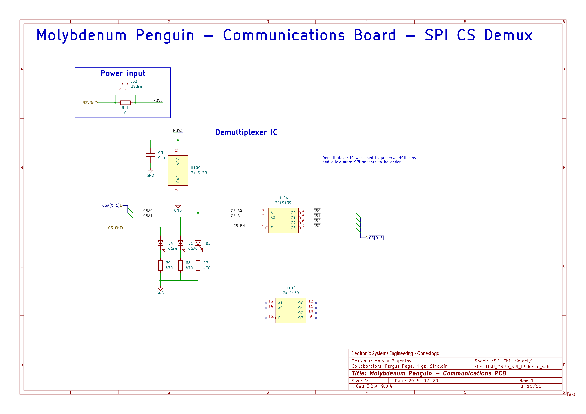
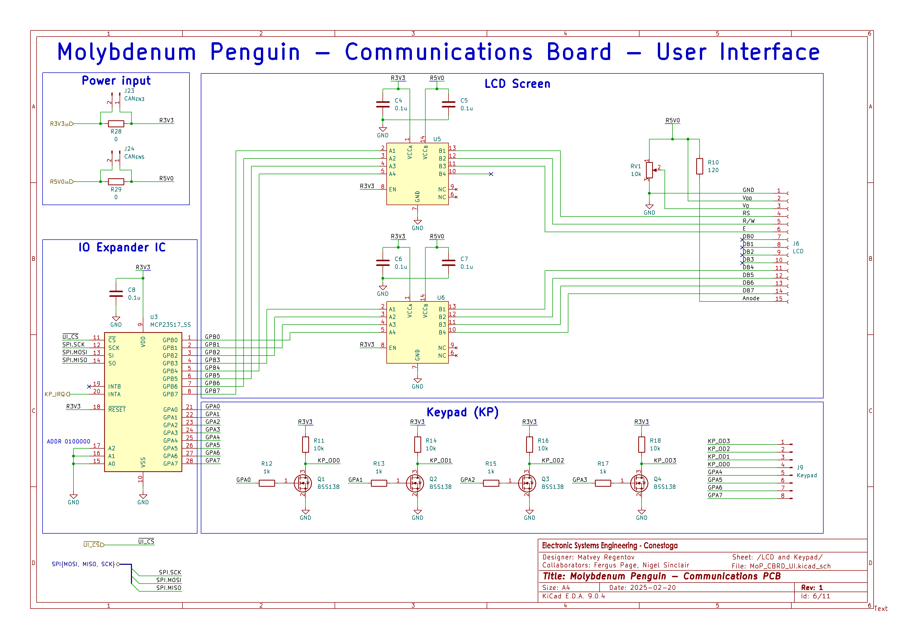
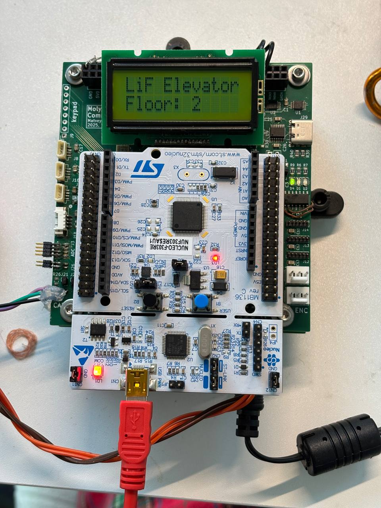
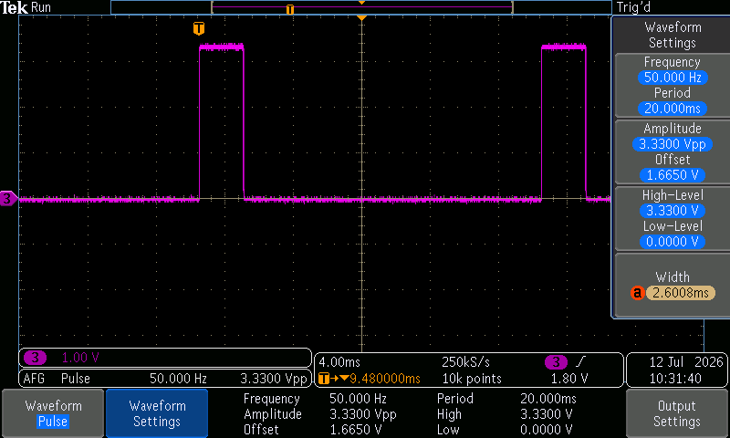
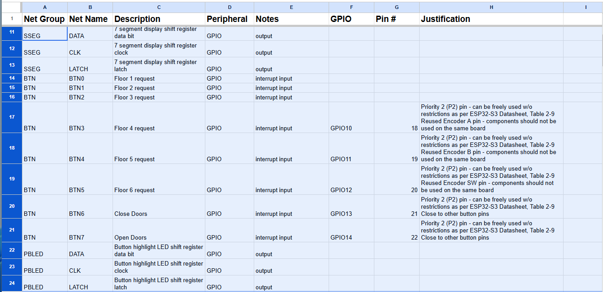
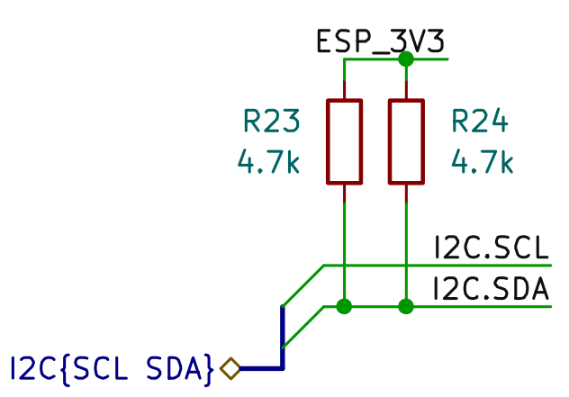

Project Molybdenum Penguin communications PCB includes an LCD interface for a 12x2 LCD
(CFAH1202A-YYH-JT#). It uses SPI GPIO expander and 4-bit communication mode to interface
with the LCD. SPI enable lines are multiplexed with 75LS139 IC.

MoP - Comms Board Schematics - SPI CS Demux
MCP23S17_SS SPI GPIO expander is used with logic-level-shifter ICs
(PI4ULS3V204LE) to convert the MCU's 3.3 V logic to the LCD's 5 V logic.

MoP - Comms Board Schematics - UI
The pinout used is:
SPI
MISO - PB4
MOSI - PB5
SCK - PB3
Chip select multiplexed:
CSA0 - PB0
CSA1 - PC13
Chip select multiplexer enable:
CSEN - PA4
This pinout is modified from original schematics based on Project Nickel Lobster testing results.
I programmed an SPI module which allows selection of the required SPI device using CS demux.
Then I added an LCD module which inherits Arduino framework's Print class to turn LCD
class into print-compatible output destination.

LCD demo on EC PCB stackup
I tested the modules by "piping" user input from UART console to the LCD.
Demo of EC LCD printing user UART input
I wanted to try to connect LCD with ToF readings, but I left the ToF in the lab. This will be
demonstrated later.
Servo Schematics and Testing
I chose SG90 servo motors for their small size and our application low torque requirement. However, the
reference document[1] for this servo implied
that 3.3 V control signal cannot be used - it needs to be 5 V. From prior experience I remember driving
5 V servos with 3.3 control signal. So, I decided to test this with an AFG built-into my oscilloscope
and a 5 V bench power supply.
Testing 5V servo with 3.3V control signal
The test showed that 3.3 V control signal is sufficient. No extra logic level shifting is required.

Oscilloscope Capture of Servo Test Signal
Due to limitations of available AFG, I could only go as low as 2ms pulse. Pulse width past 2.6ms resulted
in servo instability. It would start to oscillate continuously.
GPIO46 needs to be low (pulled down by default - table 4-1 of wroom datasheet)
USB or UART download boot
GPIO46 - see above
GPIO45:
together with EFUSE_VDD_SPI_FORCE bit selects VDD_SPI power source
leave unconnected (pulled low by default)
Removing BTN0-BTN7 and PBLED shift register driver cuz there aren't enough GPIOs on ESP32-S3.
Replaced that with I2C 16x GPIO expander.
At this point it makes sense to replace other shift register with GPIO expanders - remove extra BOM
entries and use I2C bus. More pins will be free for future additions to the board.

GPIOs removed after switching to I2C GPIO Expander ICs
Final pin assignment table looks like this.
Net Group
Net Name
Description
Peripheral
Notes
GPIO
Pin #
Justification
PDM
CLK
Audio amp clock
I2S
I2S can be used as PDM
GPIO4
4
Priority 2 (P2) pin - can be freely used w/o restrictions as per ESP32-S3
Datasheet, Table 2-9
PDM
DATA
Audio amp signal (pulse density modulation)
I2S
I2S can be used as PDM
GPIO5
5
Priority 2 (P2) pin - can be freely used w/o restrictions as per ESP32-S3
Datasheet, Table 2-9
SRV
A
Servo control pulse signal
MCPWM
Motor Control Pulse Width Modulator
GPIO6
6
Priority 2 (P2) pin - can be freely used w/o restrictions as per ESP32-S3
Datasheet, Table 2-9
SRV
B
Servo control pulse signal
MCPWM
Motor Control Pulse Width Modulator
GPIO7
7
Priority 2 (P2) pin - can be freely used w/o restrictions as per ESP32-S3
Datasheet, Table 2-9
ACC
ACC_INT1
Accelerometer Interrupt (fall)
GPIO
interrupt input
GPIO15
8
Priority 2 (P2) pin - can be freely used w/o restrictions as per ESP32-S3
Datasheet, Table 2-9
ACC
ACC_INT2
Accelerometer Interrupt (aux)
GPIO
interrupt input
GPIO16
9
Priority 2 (P2) pin - can be freely used w/o restrictions as per ESP32-S3
Datasheet, Table 2-9
V_{ST}
SYS
Power-OR status for system bus source
GPIO
input
GPIO17
10
Priority 2 (P2) pin - can be freely used w/o restrictions as per ESP32-S3
Datasheet, Table 2-9
V_{ST}
AUX
Power-OR status for 5V0 bus source
GPIO
input
GPIO18
11
Priority 2 (P2) pin - can be freely used w/o restrictions as per ESP32-S3
Datasheet, Table 2-9
I went through most of the components of the schematic diagrams and added 2 fields:
PN - manufacturer's part number
DKPN - DigiKey part number
This will make placing an order trivial, as exported BOM can be used to form a cart on DigiKey.
No PCB-mounted speaker was found. I will use a small regular speaker, which will be connected to the PCB
with leads and JST PH2.0 connector.
I also wasn't able to find a small logarithmic trim pot for audio amp gain adjustment. A linear trim
pot was used instead, as the gain adjustment is not a user-accessible feature, and only needs to be set
once during PCB installation.
Only the resistors remain to be sourced. All resistors are regular 0805 without any specialized features,
so they can be sourced later, after the PCB is routed.
Now that the schematics are finalized, I can start routing the PCB. I also need to create documentation
on various jumpers and settings of the PCB and a test plan. I will also have to make a BOM for 2
versions of the assembly:
Car Controller
Floor Controller
The team agreed to order components for extra boards on top of required 3x floor controller and 1x car
controller. This way we will be able to split the assembled units among the team members after project
completion. Additionally, redundant units will provide contingency if boards fail during testing.
Also found a few faults in the schematics:
I2C SCL line is not pulled up.

LiF - PCB schematic issue - I2C pull up resistors
Boards are missing door closed limit switch connection.
GitHub branch maintenance
Deleted outdated branches:
SC_FSM_phase1_dev
KiCAD/MCU
Also deleted old KiCAD project from Rita and Nick since the schematics have been merged into the main
project. For reference, the last commit with all KiCAD projects present is
28209906b8919672d2074a3332036f148729a66c on KiCAD/main branch - if you need to
access those projects, checkout that commit - it will be there.
Sources
[1] SG90 servo reference document consulted during
testing; no link was recorded in the source notes.